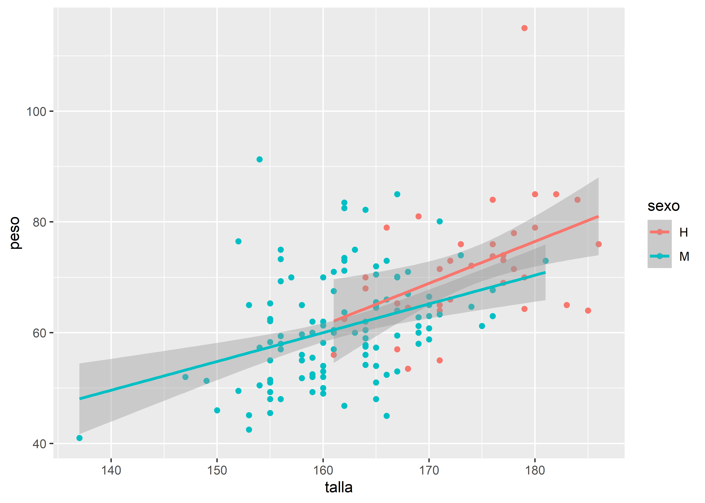
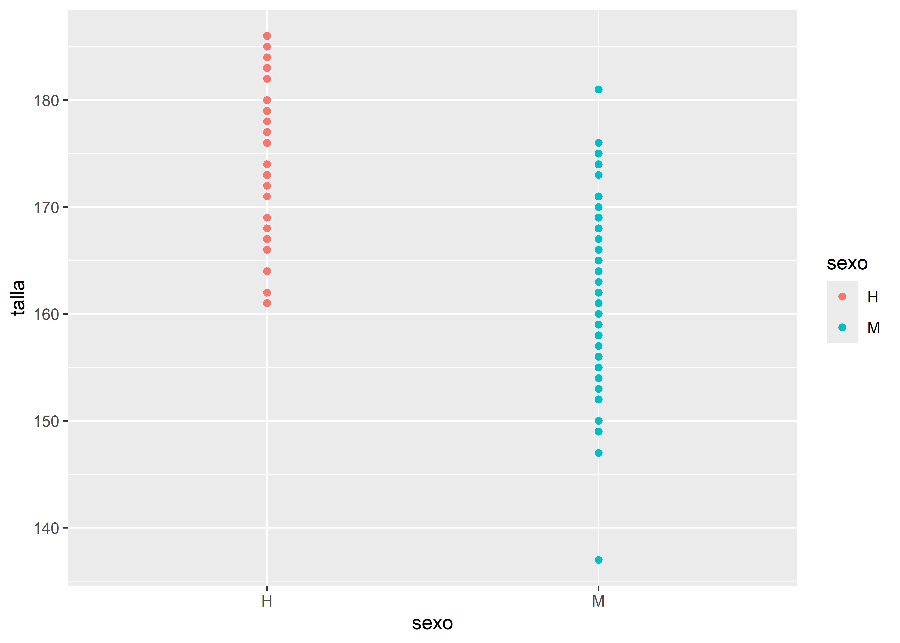
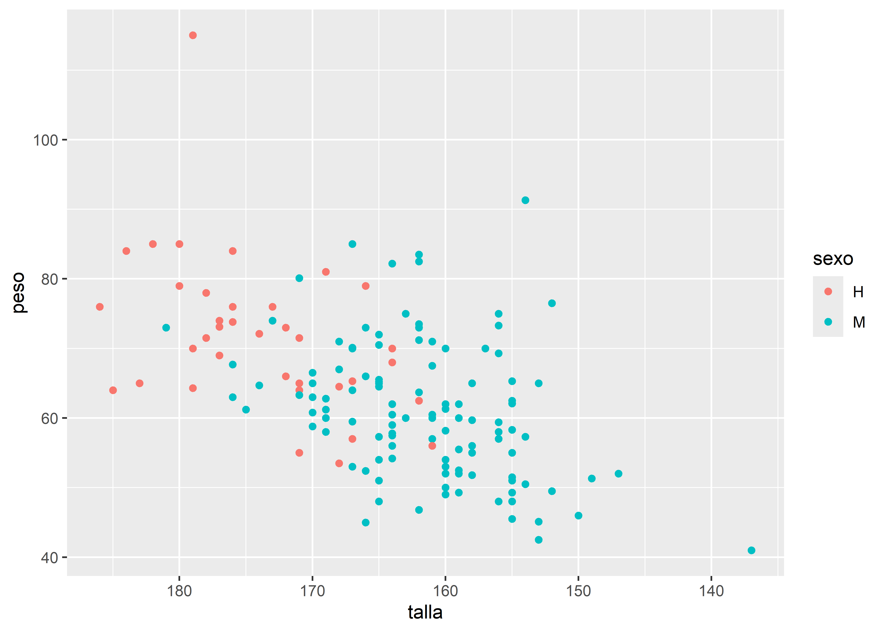
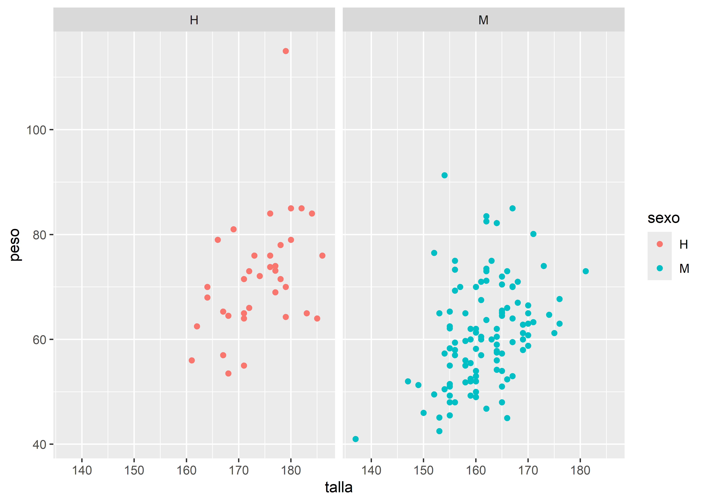
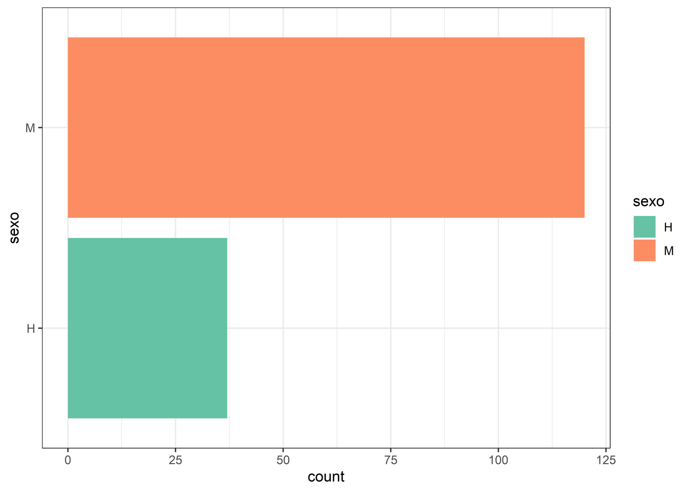
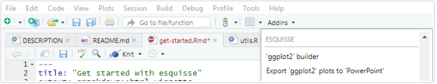

Tidyverse es el nombre que se ha dado al conjunto de paquetes desarrollados o apoyados por Hadley Wickham (jefe científico de Posit/RStudio) y su equipo, para ciencia de datos con R.
Todos estos paquetes están diseñados para funcionar juntos y comparten una misma filosofía, que se puede consultar en The tidy tools manifesto.
Los cuatro principios básicos en los que se basa son:
Reutilizar las estructuras de datos
Resolver problemas complejos combinando varias piezas sencillas
Utilizar programación funcional
Diseño para humanos
Los paquetes incluidos en el tidyverse tienen como objetivo cubrir todas las fases del análisis de datos dentro de R: importar datos, ponerlos en formato ordenado (tidy data), buscar relaciones entre ellos (mediante su transformación, visualización y creación de modelos) y comunicar los resultados.
La palabra “tidy” se puede traducir como “ordenado” y refiere a que los datos deben cumplir con una estructura determinada donde:
Cada variable es una columna de la tabla de datos.
Cada observación es una fila de la tabla de datos.
Cada tabla responde a una unidad de observación o análisis.
Además de los paquetes principales que realizan estas funciones, al instalar el tidyverse también se proporcionan otros que ayudan a trabajar con fechas, cadenas de caracteres o factores siguiendo los mismos principios.
Una de las interesantes incorporaciones transversales en el ambiente tidyverse es el uso de tuberías (del inglés pipe).
Una tubería conecta un trozo de código con otro mediante el conector |> que surge del paquete magrittr que permite transformar llamadas de funciones anidadas (con muchos paréntesis) en una simple serie de operaciones que son más fáciles de escribir y comprender. A partir de la versión 4.1.0 de R existe una tubería similar en su versión nativa (|>). El uso de cualquiera de ellas es similar.
Responde al principio donde cada función es un paso y la forma de trabajar se puede ver en el siguiente esquema general:
Mostramos el funcionamiento básico comparativo en la siguiente porción de código:
# Utilizamos para la demostración el dataset mtcars incorporado en R (datos sobre autos)head(sqrt(mtcars))
# en la línea de código de arriba estamos pidiendo mostrar la cabecera (6 primeras # observaciones de la tabla de datos) de la raíz cuadrada de los valores de la tabla mtcars, # en formato del lenguaje clásico (anidado)# Ahora activamos maggritr (viene incorporado con tidyverse)library(magrittr) # ejecutamos la línea anterior convertida al formato tuberíamtcars |>sqrt() |>head()
# la tubería le da mucha mas claridad al código separandolo en partes, como # si fuesen oraciones de un párrafo
Base gramatical
La intención de los desarrolladores para este conjunto de paquetes es lograr incorporar una gramática a la sintaxis de las funciones y sus argumentos buscando un entendimiento semántico más claro.
Una prueba de ello, es que la mayoría de las funciones son verbos (en ingles) que se entrelazan con objetos y argumentos que permiten construir “frases”. Ejemplo de ello se muestra en paquetes como dplyr.
Paquete tidyverse
El paquete tidyverse base actual (versión 2.0.0) se puede descargar del repositorio oficial CRAN mediante menú Packages de RStudio o ejecutando:
install.packages("tidyverse")
Se activa mediante:
library(tidyverse)
observamos que nos informa sobre la versión del paquete, el listado de paquetes que acabamos de activar sólo llamando a tidyverse y una serie de conflictos de nombres de funciones.
Esto es muy habitual cuando activamos varios paquetes, dado que las funciones que se encuentran dentro de ellos pueden llamarse iguales.
Por ejemplo, existe en el paquete base stats y en el paquete dplyr (que es parte de tidyverse) una función llamada filter(), por lo tanto al activar tidyverse nos informa de esta manera: dplyr::filter() masks stats::filter()
En este caso, cuando necesitemos asegurarnos que la función que deseamos ejecutar pertenece a determinado paquete, es recomendable escribirla de la siguiente forma:
nombre_paquete::nombre_función
stats:filter() para la función filter() del paquete stats
dplyr:filter() para la función filter() del paquete dplyr
Los paquetes incluidos que se instalan en esta versión son:
Existen otros paquetes (la cantidad crece mes a mes) que son creados bajo la misma filosofía pero no están incluidos. En esos casos hay que instalarlos y activarlos individualmente.
Para profundizar sobre tidyverse, se puede visitar el sitio https://www.tidyverse.org/ y el libro traducido al español r4ds o la nueva versión r4ds 2e, por ahora solo en inglés.
Lectura y escritura de datos
Paquete readr
readr contiene funciones similares a las de la familia read.table() de Rbase pero desarrollados bajo el ecosistema tidyverse.
Los archivos de texto plano (ASCII y otras codificaciones) son universalmente utilizados por la mayoría de los gestores de bases de datos y/o planillas de cálculo. Generalmente encontrados con extensiones .txt o .csv (por comma-separated values) son el tipo de archivo de datos más habitual dentro del lenguaje R.
Estos datos planos tienen dos peculiaridades:
La cabecera (en inglés header)
El caracter o símbolo separador que indica la separación de columnas: pueden estar separadas por comas, puntos y comas, por tabulación, etc…
La cabecera puede existir o no, y la inclusión o no de la cabecera se maneja desde los argumentos col_names y skip.
Con col_names = TRUE incluimos la primer fila como cabecera (nombre de las columnas) y en FALSE la salteamos.
Con skip = 0 la lectura de produce desde la primer fila (se puede omitir), pero si la cabecera fuese compleja con varias filas entre títulos y subtítulos, debemos indicar cuantas filas iniciales se “saltea”. Por ejemplo con skip = 5 se saltea las primeras 5 filas del archivo.
El otro elemento a tener en cuenta es el caracter separador que utiliza el archivo para indicar cuando comienza una nueva columna (variable).
Generalmente los separadores más comunes son: la coma (,), el punto y coma (;), el tabulador (TAB), el espacio ( ), el caracter pipe (|), entre otros posibles.
Algunas de las funciones del paquete asumen un separador particular. Por caso read_csv() lee separados por coma y read_tsv() separado por tabulaciones, pero la función read_delim() permite que definamos el separador a través del argumento delim.
En forma detallada el paquete readr soporta siete formatos de archivo a partir de siete funciones:
read_csv(): archivos separados por comas (CSV)
read_tsv(): archivos separados por tabulaciones
read_delim(): archivos separados con delimitadores generales
read_fwf(): archivos con columnas de ancho fijo
read_table(): archivos formato tabla con columnas separadas por espacios
read_log(): archivos log web
En comparación con las funciones base de R, las funciones de readr:
Usan un esquema de nombres consistente de parámetros
Son más rápidas.
Analizan eficientemente los formatos de datos comunes, incluyendo fecha/hora.
Muestran una barra de progreso si la carga va a llevar un tiempo. (para archivos grandes)
Viene incluida dentro de la instalación de tidyverse y se activa con él, pero también permite activarse solo:
library(readr)
Algunos ejemplos de sintaxis:
Leemos un archivo sin cabecera separado por comas bajo el nombre datos:
info <-read_csv2("datos/ejemplo-datos-header.csv", col_names = T)
Observemos que dependiendo de la forma en que se encuentren los datos en el archivo (distintos separadores, cabeceras, etc), aplicamos la función correspondiente. Además cada vez que hacemos una lectura la función se encarga de analizar (parse) el tipo de dato que hay en cada columna.
datos
# A tibble: 4 × 5
X1 X2 X3 X4 X5
<dbl> <chr> <chr> <chr> <date>
1 9 Leone Fernando M 1958-12-24
2 26 Garcia Esteban M 1954-01-21
3 35 Salamone Nicolas M 1993-06-27
4 48 Gonzalez Viviana F 1965-06-21
En el primer ejemplo, el archivo no tenía cabecera y por lo tanto, al importarse los datos cada variable se denominó X1, X2, X3, etc.
Otra forma de mostrar la estructura del archivo y sus columnas es con la función glimpse():
Los posibles tipos de datos son los atómicos del lenguaje más algún agregado: character, integer, numeric, double, logical y date/time.
Por ejemplo, en la tabla leída anteriormente las columnas donde hay números enteros fueron reconocidos como double (<dbl>), los que tienen algún caracter como character (<chr>) y las fechas como date (<date>).
Agregamos unos argumentos más y ejemplificamos la sintaxis con read_delim() para leer un archivo con cabecera compleja (la tabla comienza en la fila 9) separado por caracteres | (pipes).
Cuando realicemos lecturas no debemos olvidar asignar su salida a un nombre, que será el nombre del dataframe que reciba los datos dentro de nuestra sesión de trabajo. (<-)
Funciones de escritura
Dentro del paquete coexisten funciones espejo de escritura para las posibilidades de lectura más relevantes. Así encontramos estos cuatro:
write_csv(): escribe archivos separados por comas (csv)
write_csv2(): escribe archivos separados por punto y comas (csv)
write_tsv(): escribe archivos separados por tabulaciones
write_delim(): escribe archivos separados con delimitadores definidos por el usuario
Los argumentos son generales y para el caso del último más extensos, dado que hay que definir cual es el separador que deseamos en el archivo.
Por ejemplo para exportar un conjunto de datos en texto plano al que denominaremos “ejemplo.csv” con separador punto y coma y cabecera incluida podemos hacer:
write_csv2(datos, "ejemplo.csv") # define cabecera y separador ;
Paquete readxl
Uno de los formatos de documentos más comunes en los que se almacenan datos son las hojas de cálculo, en particular, las creadas con el programa Excel de Microsoft Office.
El paquete readxl es parte del ecosistema tidyverse y permite leer este tipo de archivos.
Posee compatibilidad con hojas de cálculo de Excel 97-03, de extensión .xls, y con hojas de cálculo de las versiones más recientes de Excel, de extensión, .xlsx
La primera función interesante es excel_sheets(), útil para conocer y listar los nombre de las hojas contenidas dentro de un archivo (libro) Excel.
Por ejemplo, supongamos que tenemos un archivo denominado “datos.xlsx” y queremos saber por cuantas hojas está compuesto y que nombre tienen.
library(readxl) # hay que activarlo independientemente de tidyverseexcel_sheets("datos/datos.xlsx")
[1] "diabetes" "vigilancia" "mortalidad"
Obtenemos de esta manera información sobre el archivo. Hay tres hojas llamadas diabetes, vigilancia y mortalidad.
Para poder leer cada una de estas hojas de datos debemos usar la función read_excel(), que tiene los siguientes argumentos:
path: nombre del archivo y la ubicación (si fuese necesaria) entre comillas
sheet: nombre de la hoja o número de ubicación
col_names: si se activa toma la primer fila como nombres de columnas (variables)
skip: permite saltear una cantidad determinada de filas antes de comenzar la lectura
En primer lugar, cuando ejecutamos esta función, llama a otra denominada excel_format() que determina frente a que formato de archivo estamos. Si es un Excel tipo .xsl o tipo .xlsx. En relación a esta respuesta, luego aplica la función específica para cada caso - read_xls() o readxlsx().
Todas estas funciones mencionadas en el procedimiento que sigue read_excel() se pueden utilizar en forma específica.
Continuemos con el archivo “datos.xlsx” y procedamos a leer los datos de su primer hoja, llamada diabetes.
Observemos que en los argumentos escribimos el nombre del archivo que se encuentra en nuestro proyecto y por lo tanto en nuestra carpeta activa, el nombre de la hoja y nos aseguramos que la primer fila representa a la cabecera de la tabla (sus nombres de variables).
Como el paquete readxl se inscribe dentro del universo tidyverse el formato de salida es un dataframe/tibble. En este caso de 23 observaciones por 8 variables.
Ahora leamos la segunda hoja de nombre vigilancia.
# A tibble: 6 × 9
...1 ...2 ...3 ...4 ...5 ...6 ...7 ...8 ...9
<dbl> <chr> <dbl> <dbl> <dbl> <dbl> <dbl> <chr> <chr>
1 875 09/28/2015 2015 544080000 1 31 1 F VIGILANCIA EN SALUD …
2 875 42317 2015 544080000 1 35 1 F VIGILANCIA EN SALUD …
3 875 42317 2015 544080000 1 47 1 F VIGILANCIA EN SALUD …
4 307 09/26/2015 2015 544005273 1 23 1 M VIGILANCIA INTEGRADA…
5 307 09/24/2015 2015 544005273 1 19 1 M VIGILANCIA INTEGRADA…
6 875 09/28/2015 2015 544080000 1 63 1 F VIGILANCIA EN SALUD …
Centremos nuestra mirada en los argumentos anteriores: en lugar del nombre de la hoja usamos un 2 que es su ubicación (la segunda hoja del archivo Excel) y configuramos a col_names con F (false) porque el conjunto de datos no tiene cabecera.
Cuando ocurre esta situación donde la tabla no tiene nombre de columnas readxl le asigna nombres del tipo ...1, ...2, ...x
Finalmente leemos la última hoja disponible del archivo.
Lo novedoso de esta lectura es el argumento skip = 1 que debimos incorporar dado que, en este caso, la hoja de Excel comienza con una línea de título que no pertenece al conjunto de datos. También que el argumento sheet permite el nombre de la hoja elegida entre comillas.
Retomando los argumentos generales de la función podemos mencionar estos otros:
n_max: número máximo de filas leídas
range: rango de celdas a leer (definidas como se suele usar en Excel, por ej: B3:D87)
col_types: especificación del tipo de dato para cada columna leída. Se pueden utilizar los tipos habituales “numeric”, “logical”, “text”, “date”, etc. Existen dos tipos específicos más: “skip” que saltea la lectura de la columna y “guess” que permite que la función decida cual es el formato adecuado de importación. Este último es el modo predeterminado cuando no especificamos el argumento.
na: caracter o vector que deseamos se interprete como valor perdido (missing). Por defecto las celdas vacías se interpretan de esta forma y se le asigna NA
Gestión de datos con el Paquete dplyr
El paquete dplyr es parte del universo tidyverse que fue desarrollado por Hadley Wickham a partir de optimizar una versión del paquete plyr.
La contribución significativa del paquete es proporcionar una “gramática” (funciones-verbos) para la manipulación y operaciones de datos que lo hace más fácil de entender.
Las funciones clave del paquete, responden a las siguientes acciones (verbos):
select(): devuelve un conjunto de columnas (variables)
rename(): renombra variables en una conjunto de datos
filter(): devuelve un conjunto de filas (observaciones) según una o varias condiciones lógicas
arrange(): reordena filas de un conjunto de datos
mutate(): añade nuevas variables/columnas o transforma variables existentes
summarise()/summarize(): genera resúmenes estadísticos de diferentes variables en el conjunto de datos.
group_by(): agrupa un conjunto de filas seleccionado, en un conjunto de filas de resumen de acuerdo con los valores de una o más columnas o expresiones.
count(): contabiliza valores que se repiten, es decir genera tabla de frecuencias.
Además como todos los paquetes del tidyverse integra al operador %>% (pipe) logrando una única tubería (“pipeline”).
Argumentos comúnes en las funciones dplyr
Todas las funciones, básicamente, tienen en común una serie de argumentos.
El primer argumento es el nombre del conjunto de datos (objeto donde esta nuestra tabla de datos).
Los otros argumentos describen que hacer con el conjunto de datos especificado en el primer argumento, podemos referirnos a las columnas en el objeto directamente sin utilizar el operador $, es decir sólo con el nombre de la columna/variable.
El valor de retorno es un nuevo conjunto de datos.
Los conjuntos de datos deben estar bien organizados/estructurados, es decir debe existir una observación por columna y, cada columna representar una variable, medida o característica de esa observación. Es decir, debe cumplir con tidy data.
Activación del paquete
dplyr está incluído en el paquete tidyverse, por lo que se encuentra disponible si tenemos activado a este último.
También se puede activar en forma independiente, aunque no es necesario si ya activamos tidyverse:
library(dplyr)
Conjunto de datos para ejemplo
Visualizar y entender el funcionamiento de estos “verbos” de manipulación es posible si ejemplificamos su aplicación. Por este motivo vamos a leer un conjunto de datos que servirá para ejercitar las funciones del paquete.
datos <-read_csv("datos/noti-vih.csv") # asignamos la lectura a datoshead(datos) # mostramos las 6 primeras observaciones
# A tibble: 6 × 4
jurisdiccion año casos pob
<chr> <dbl> <dbl> <dbl>
1 Buenos Aires 2015 1513 16626374
2 Buenos Aires 2016 957 16789474
3 CABA 2015 901 3054237
4 CABA 2016 427 3050000
5 Catamarca 2015 69 396552
6 Catamarca 2016 51 401575
La tabla de datos “noti-vih.csv” contiene datos de notificación de vih por jurisdicción de Argentina para los años 2015 y 2016.
Función select()
Esta función selecciona las variables que especificamos devolviendo un conjunto de datos “recortado por columna”.
Veamos algunas variaciones de ayuda para hacer estas selecciones.
starts_with(): selecciona todas las columnas que comiencen con el patrón indicado.
ends_with(): selecciona todas las columnas que terminen con el patrón indicado.
contains(): selecciona las columnas que posean el patrón indicado.
matches(): similar a contains(), pero permite poner una expresión regular.
all_of(): selecciona las variables pasadas en un vector (todos los nombres deben estar presentes o devuelve un error)
any_of(): idem anterior excepto que no se genera ningún error para los nombres que no existen.
num_range(): selecciona variables con nombre combinados con caracteres y números (ejemplo: num_range(“x”, 1:3) selecciona las variables x1, x2 y x3.
where(): aplica una función a todas las variables y selecciona aquellas para las cuales la función regresa TRUE (por ejemplo: is.numeric() para seleccionar todas las variables numéricas)
Función rename()
Esta función es una extensión de select(), dado que esta última permite cambiar el nombre de variables pero no es muy útil porque descarta todas las variables que no se mencionan explícitamente. En cambio rename() renombra variables mientras que mantiene las demás no mencionadas.
Por ejemplo, cambiamos el nombre de la variable pob por población.
Así como la función select() es utilizada para seleccionar columnas, la función filter() hace lo propio con las filas del conjunto de datos, produciendo un subconjunto de observaciones.
Veamos un ejemplo sencillo sobre nuestros datos:
datos |>filter(jurisdiccion =="Tucuman")
# A tibble: 2 × 4
jurisdiccion año casos pob
<chr> <dbl> <dbl> <dbl>
1 Tucuman 2015 258 1592593
2 Tucuman 2016 246 1618421
Utiliza los mismos operadores de comparación propios del lenguaje R
Operador
Descripción
<
Menor a
>
Mayor a
<=
Menor o igual a
>=
Mayor o igual a
==
Igual a
!=
No igual a
%in%
Es parte de
is.na()
Es NA
!is.na()
No es NA
Lo mismo con los operadores lógicos que se utilizan como conectores entre las expresiones.
Operador
Descripción
&
AND booleano
|
OR booleano
xor()
OR exclusivo
!
NOT
any()
cualquier TRUE
all()
todos TRUE
Cuando usamos múltiples argumentos separados por coma dentro de filter() se combinan con un conector AND, es decir cada expresión debe ser verdadera para que una fila sea incluida en la salida.
Por ejemplo:
Filtramos a las observaciones que cumplan con la condición que casos sea mayor a 100 y población sea menor a 1000000
Filtramos las observaciones inversas a la anterior mediante xor(), que selecciona los valores de año y casos exclusivos (es decir que no se den ambos en TRUE).
La función arrange() se utiliza para ordenar las filas de un conjunto de datos de acuerdo a una o varias columnas/variables. Por defecto, el ordenamiento es ascendente alfanumérico.
Ordenamos la tabla datos por la variable pob (forma ascendente predeterminada):
datos |>arrange(pob)
# A tibble: 48 × 4
jurisdiccion año casos pob
<chr> <dbl> <dbl> <dbl>
1 Tierra del Fuego 2015 36 152542
2 Tierra del Fuego 2016 34 156682
3 Santa Cruz 2015 65 320197
4 Santa Cruz 2016 59 329609
5 La Pampa 2015 57 343373
6 La Pampa 2016 67 345361
7 La Rioja 2015 41 369369
8 La Rioja 2016 6 375000
9 Catamarca 2015 69 396552
10 Catamarca 2016 51 401575
# ℹ 38 more rows
Para ordenar en forma descendente podemos utilizar desc() dentro de los argumentos de arrange():
datos |>arrange(desc(pob))
# A tibble: 48 × 4
jurisdiccion año casos pob
<chr> <dbl> <dbl> <dbl>
1 Buenos Aires 2016 957 16789474
2 Buenos Aires 2015 1513 16626374
3 Cordoba 2016 368 3607843
4 Cordoba 2015 468 3572519
5 Santa Fe 2016 170 3400000
6 Santa Fe 2015 301 3382022
7 CABA 2015 901 3054237
8 CABA 2016 427 3050000
9 Mendoza 2016 254 1909774
10 Mendoza 2015 316 1880952
# ℹ 38 more rows
Podemos combinar ordenamientos. Por ejemplo, en forma alfabética ascendente para jusrisdiccion y luego numérica descendente para casos.
Esta función nos proporciona computar tranformaciones de variables en un conjunto de datos. A menudo, tendremos la necesidad de modificar variables existentes o crear nuevas variables que se calculan a partir de las que tenemos, mutate() nos ofrece una interface clara para realizar este tipo de operaciones.
Por ejemplo, nos puede interesar calcular tasas crudas para cada jurisdicción y año, en función de los casos y el total de población.
Observemos que la función realiza el cálculo (en este caso tasas crudas por 100000 habitantes) e incorpora una nueva variable por cada observación con el resultado.
También se pueden construir múltiples variables en la misma expresión, solamente separadas por comas.
datos |>mutate(tasaxcien_mil = casos/pob*100000, tasaxdiez_mil = casos/pob*10000)
Si necesitemos que estas dos nuevas variables queden dentro de la tabla de datos y no solo mostrarla en consola como hasta ahora, debemos utilizar el operador de asignación:
datos <- datos |>mutate(tasaxcien_mil = casos/pob*100000, tasaxdiez_mil = casos/pob*10000)
La propiedad imprescindible es que la función debe poder vectorizar: debe tomar un vector de valores como entrada, y devolver un vector con el mismo número de valores que la salida.
No hay forma de enumerar todas las funciones posibles que se podría usar, pero mencionaremos algunas que pueden ser útiles:
Operadores aritméticos: +, -, *, /, ^.
Aritmética modular: %/% (división entera) y %% (resto), donde \(x == y * (x \ \%/\% \ y) + (x\ \%\% \ y)\). La aritmética modular es una herramienta útil porque te permite dividir números enteros en porciones.
Valores acumulados: R proporciona funciones para ejecutar sumas, productos, mínimos y máximos acumulados: cumsum(), cumprod(), cummin(), cummax(); y dplyr proporciona cummean() para promedios acumulados.
Clasificaciones (ranking): hay una serie de funciones de clasificación, por ejemplo min_rank(). Genera el tipo de clasificación habitual (1º, 2º, etc). El valor predeterminado relaciona los valores más pequeños a rangos pequeños; podemos usar desc(x) para invertir la relación (valores más grandes a rangos más pequeños)
Si utilizamos el mismo nombre de una variable incluída dentro de la tabla de datos, estaremos sobrescribiendola (se usa cuando transformamos una variable, por ejemplo: le cambiamos su tipo de character a factor). Para que la variable sea nueva debe nombrarse con un nombre que no exista previamente dentro de la tabla de datos.
Función summarise()
La función summarise() (se puede escribir también summarize()) resume variables de un conjunto de datos.
datos |>summarise(promedio_casos =mean(casos), casos_totales =sum(casos))
Su uso es muy interesante cuando la combinamos con group_by() (función que detallaremos luego). Esta situación permite estratificar los resultados por grupos específicos.
Por ejemplo, podemos agrupar el por año y simultáneamente aplicar el mismo summarise() anterior.
datos |>group_by(año) |>summarise(promedio_casos =mean(casos), casos_totales =sum(casos))
# A tibble: 2 × 3
año promedio_casos casos_totales
<dbl> <dbl> <dbl>
1 2015 224. 5369
2 2016 160. 3842
El resultado es una tabla con dos filas, una para cada grupo (año 2015 y año 2016) con los valores promedio y casos totales respectivos.
Algunas de las funciones del R base que se pueden utilizar dentro de los argumentos de esta función son:
min(): mínimo
max(): máximo
mean(): media
median(): mediana
var(): varianza
sd(): desvío
sum(): sumatoria
Otras funciones que se pueden incorporar las provee el mismo paquete dplyr, por ejemplo:
first(): primer valor en el vector
last(): último valor en el vector
n(): número de valores en el vector
n_distinct(): números de valores distintos en el vector
Función group_by()
Decíamos recién que la función group_by() es útil cuando trabaja conjuntamente con summarise() dado que agrupa un conjunto de filas seleccionado en un conjunto de filas de resumen de acuerdo con los valores de una o más columnas o expresiones.
Para ejemplificar su trabajo asociado obtendremos una nueva tabla con el cálculo de las tasas crudas para cada jurisdicción por año (similar al ejemplo de la aplicación de mutate():
datos |>group_by(jurisdiccion, año) |>summarise(tasa = casos/pob*100000)
En la mayoría de estos ejemplos la salida es directa, es decir no construimos nuevos objetos contenedores de los datos producidos. Pero en muchas situaciones vamos a necesitar generar nuevos conjunto de datos con las transformaciones realizadas. Si en alguna de estas ocasiones llegamos a agrupar datos mediante group_by() y posteriormente necesitamos volver a tener la información desagrupada existe una función vinculada denominada ungroup()
Combinaciones
En los ejemplos anteriores vimos como se van integrando alguna de las funciones mediante el uso de la tubería %>% o |>. La idea detrás de la búsqueda gramatical del paquete es poder enlazar las acciones para construir oraciones más complejas.
Un ejemplo que podría integrar gran parte de los visto sería:
Obtener una nueva tabla con las tasas crudas de casos notificados de VIH, por año y jurisdicción, mayores a 20 x 100000 habitantes ordenadas de mayor a menor.
datos |># siempre partimos de los datosgroup_by(año, jurisdiccion) |># agrupamossummarise(tasa = casos/pob*100000) |># resumimosfilter(tasa >20) |># filtramosarrange(desc(tasa)) # ordenamos
# A tibble: 5 × 3
# Groups: año [2]
año jurisdiccion tasa
<dbl> <chr> <dbl>
1 2015 CABA 29.5
2 2015 Tierra del Fuego 23.6
3 2015 Jujuy 22.0
4 2016 Tierra del Fuego 21.7
5 2015 Santa Cruz 20.3
Observemos que una buena manera de construir el código es respetar un salto de línea para cada término de la oración para una lectura más clara.
Demostramos así la potencialidad que tienen estas funciones combinadas donde en esta situación integramos las funciones group_by(), summarise() , filter() y arrange() en una misma operación.
Función count()
Esta última función que presentamos permite contar rápidamente los valores únicos de una o más variables.
Produce fácilmente tablas de frecuencias absolutas que luego posibilitan construir frecuencias relativas.
La aplicamos sobre la variable jurisdiccion de datos:
datos |>count(jurisdiccion)
# A tibble: 24 × 2
jurisdiccion n
<chr> <int>
1 Buenos Aires 2
2 CABA 2
3 Catamarca 2
4 Chaco 2
5 Chubut 2
6 Cordoba 2
7 Corrientes 2
8 Entre Rios 2
9 Formosa 2
10 Jujuy 2
# ℹ 14 more rows
Tiene un par de argumentos opcionales:
name: es el nombre de la columna con el conteo. Por defecto se llama n
sort: ordena la tabla de frecuencia de mayor a menor
wt: se puede opcionalmente incorporar una variable con la ponderación (factor de expansión) para el calculo de la frecuencia.
Gráficos estadísticos con ggplot2
ggplot2 es un paquete que se autodefine como librería para “crear elegantes visualizaciones de datos usando una gramática de gráficos”
Propone una forma intuitiva de construir gráficos basada en The Grammar of Graphics, a partir de utilizar capas y un sistema apoyado en tres componentes básicos:
datos
coordenadas
objetos geométricos
La estructura para construir un gráfico es la siguiente:
Anatomía de gráficos con ggplot2
El paquete se basa en una gramática de gráficos que puede ser entendida a partir de conocer sus componentes:
data: es aquél conjunto de datos que vamos a graficar, con toda la información pertinente para realizar el gráfico.
aes(): reducción de aesthetic mapping o mapeo estético en el que se puede declarar todo lo que puede ser visible de un gráfico.
geoms: son representaciones para dibujar gráficos (puntos, líneas, cajas, entre otros).
stats: son aquellas transformaciones estadísticas que le hacemos a los datos. Nos ayudan a hacer un resumen del conjunto de datos para visualizar mejor (por ejemplo, la media o la mediana como estadísticas de tendencia central).
scales: facilitan colorear (o escalar) los datos según distintas variables. Dibujan los ejes y las leyendas.
coordinate systems: es el sistema de coordenadas para el mapeo del gráfico en un plano bidimensional.
facets: nos permiten partir el conjunto de datos según factores para graficar en viñetas separadas creando matrices gráficas.
themes: son conjuntos de características gráficas que permiten controlar la apariencia general de todos los elementos que no son datos (por ejemplo, el color del fondo o el tipo de fuente).
Antes de comenzar a explicar cada componente vamos a leer un conjunto de datos que nos permita mostrar los ejemplos gráficos.
library(tidyverse)facultad <-read_csv("datos/facultad.csv") # lecturahead(facultad) # mostramos las 6 primeras observaciones
# A tibble: 6 × 18
HC SEXO EDAD ANT_DIABETES ANT_TBC ANT_CANCER ANT_OBESIDAD ANT_ECV ANT_HT
<dbl> <chr> <dbl> <chr> <chr> <chr> <chr> <chr> <chr>
1 26880 M 17 NO NO NO SI NO SI
2 26775 M 18 SI NO NO NO NO NO
3 26877 M 18 SI NO SI NO NO SI
4 26776 M 18 NO NO NO SI SI NO
5 26718 M 18 NO NO NO NO NO SI
6 26738 M 18 NO NO NO NO NO SI
# ℹ 9 more variables: ANT_COL <chr>, FUMA <chr>, EDADINI <dbl>, CANTIDAD <dbl>,
# COL <dbl>, PESO <dbl>, TALLA <dbl>, SIST <dbl>, DIAST <dbl>
El archivo leído se llama “facultad.csv” y contiene información de salud sobre ingresantes a una facultad tales como sexo, edad, talla y peso, entre otras. (son datos ficticios con fines docentes).
Mapeo estético (aesthetic mapping) y objetos geométricos (geom)
Decíamos que aes() hace referencia al contenido estético del gráfico. Es decir, la función le brinda indicios a ggplot2 sobre cómo dibujar los distintas líneas, formas, colores y tamaños.
Es importante notar que aes() crea una nueva capa en relación a las variables y agrega leyendas a los gráficos. Al incorporar aes() al llamado de ggplot() estamos compartiendo la información estética en todas las capas. Si deseamos que esa información sólo esté en una de las capas, debemos usar aes() en la capa correspondiente.
Veamos como funciona y sus diferencias:
facultad |>ggplot(aes(TALLA, PESO)) # solo la capa estética aes()

Este gráfico solo contiene los ejes que especificamos (PESO y TALLA) pero no contiene los datos. Si deseamos incorporarlos agregamos una capa de puntos con geom_point() a través del símbolo +:
facultad |>ggplot(aes(TALLA, PESO)) +geom_point() # agregamos la capa geométrica de puntos
Podemos diferenciar los puntos según se traten de ingresantes mujeres y hombres, asociando el argumento color dentro de aes() con la variable SEXO:
facultad |>ggplot(aes(TALLA, PESO, color = SEXO)) +geom_point()

Estos gráficos también posibilitan el agregado de otra capa geométrica, por ejemplo rectas de regresión para cada grupo según sexo:
facultad |>ggplot(aes(TALLA, PESO, color = SEXO)) +geom_point() +geom_smooth(method ="lm") # agregamos una segunda capa geométrica
Esta función geom_smooth() posee distintos métodos y en este ejemplo utilizamos el de regresión lineal entre talla y peso junto a sus intervalos de confianza.
A continuación vamos a ver que diferencias existen cuando aes() se encuentra dentro del ggplot() y cuando se ubica en otras capas de funciones como en geom_point()
Decíamos anteriormente que al incorporar aes() al llamado de ggplot() estamos compartiendo la información estética en todas las capas.
Entonces si quitamos aes() de allí y lo ubicamos en una capa única, esta configuración deja de afectar al conjunto del gráfico:
facultad |>ggplot(aes(TALLA, PESO)) +geom_point(aes(color = SEXO)) +# color esta definido en el aes() # de la capa geométricageom_smooth(method ="lm")
En este ejemplo, aes() para el color solo se ubica dentro de geom_point() y por lo tanto dibuja los puntos con sus respectivos colores, pero no afecta a la capa de geom_smooth() produciendo solo una línea de regresión para el conjunto de puntos.
Es decir que geom_smooth() no recibe la orden de agrupar según SEXO, a raíz de no haber definido color dentro del aes() general.
Este comportamiento nos permite gran versatilidad en los gráficos que realicemos.
Algunas otras funciones de geom_ son:
geom_line(): para líneas
geom_boxplot(): para boxplot
geom_histogram(): para histogramas
geom_density(): para curvas de densidad
geom_bar(): para barras
Estas funciones geométricas aplicadas sobre los mismos datos definen el tipo de gráfico.
Para ejemplificar, podemos gráficar dos variables como SEXO y TALLA generando una base a la que sumaremos capas diferentes de geom():
# Gráfico de puntosfacultad |>ggplot(aes(SEXO, TALLA, color = SEXO)) +geom_point() # capa geométrica de puntos

# Boxplotfacultad |>ggplot(aes(SEXO, TALLA, color = SEXO)) +geom_boxplot() # capa geométrica de boxplot
# Entramado de puntosfacultad |>ggplot(aes(SEXO, TALLA, color = SEXO)) +geom_jitter() # capa geométrica jitter (entramado de puntos)
# Gráfico de violínfacultad |>ggplot(aes(SEXO, TALLA, fill = SEXO)) +geom_violin() # capa geométrica de violin
Observemos que en este último gráfico cambiamos, dentro de aes(), color por fill. Mientras que color define el color del contorno del polígono, la línea de una recta o curva y los puntos, fill define el relleno de los objetos como es el caso de los violines construidos o cualquier elemento geométrico de polígono.
Escalas (scale)
Las configuraciones que se pueden realizar con scale son numerosas. Entre ellas encontramos cambios de color de contorno y relleno, cambios de posición, de tamaño y tipo de línea.
El argumento para modificar valores de escala comienzan siempre con con scale_ (por ejemplo scale_fill_ )
Sigamos trabajando con el conjunto de datos leído para mostrar ejemplos de gráficos donde agregamos capas de escala para color de relleno:
facultad |>ggplot(aes(SEXO, TALLA, fill = SEXO)) +geom_boxplot() +scale_fill_brewer(palette ="Oranges") # paleta de los naranjas
En este ejemplo aplicamos una capa scale_fill_brewer() con una paleta de colores (Oranges) que se vincula con el argumento fill de aes() y definen los colores del boxplot.
Lo mismo hacemos para una gama de grises mediante scale_fill_grey():
facultad |>ggplot(aes(SEXO, TALLA, fill = SEXO)) +geom_boxplot() +scale_fill_grey(start =0.4, end =0.8) # paleta de los grises
Otro uso de escalas, esta vez aplicado a los ejes, es la inversión del eje X:
facultad |>ggplot(aes(TALLA, PESO, color = SEXO)) +geom_point() +scale_x_reverse() # escala inversa de x
Como se observa en el gráfico la inclusión de scale_x_reverse() provoca que la escala X se invierta, quedando la TALLA ordenada de mayor a menor.
Por último, otro ejemplo interesante es aplicado a escalas de etiquetado de ejes. Volvamos al ejemplo reciente de boxplot con relleno en escala de grises, su eje Y se dibuja predeterminado desde 130 a casi 200 cms con cortes cada 5 cms y etiquetas cada 10 cms.
Con escalas continuas manuales de la forma scale_*_continuos() podemos personalizar el eje Y:
facultad |>ggplot(aes(SEXO, TALLA, fill = SEXO)) +geom_boxplot() +scale_fill_grey(start =0.4, end =0.8) +scale_y_continuous(breaks =seq(130,200,2))

En este caso particular definimos un eje Y con etiquetas de 2 en 2, mediante la línea scale_y_continuous(breaks = seq(130,200,2)).
Transformaciones estadísticas (stat)
Algunos gráficos no requieren de transformaciones estadísticas, en cambio, otros como boxplot, histogramas, etc. poseen valores predeterminados de stat que pueden ser modificados.
Estos valores se encuentra en forma de argumentos dentro de la función geométrica, por ejemplo para los histograma el argumento bins define la cantidad de intervalos de clase:
facultad |>ggplot(aes(EDAD)) +geom_histogram(bins =nclass.Sturges(facultad$EDAD), fill ="Blue")
Vemos que el gráfico se construyó utilizando la regla de Sturges para determinar la cantidad de intervalos de clase para la variable EDAD. (función nclass.Sturges())
Otras transformaciones estadísticas se incorporan como capas independientes, por ejemplo si queremos agregar los valores de media a los boxplot de talla según sexo construidos anteriormente:
facultad |>ggplot(aes(SEXO, TALLA, fill = SEXO)) +geom_boxplot() +scale_fill_brewer(palette ="Greens") +stat_summary(fun = mean, color ="darkred", geom ="point", shape =18, size =3)
Aquí la capa completa surge a partir de la función stat_summary(), con argumentos que indican que se aplique la función mean. Incluye también la definición del objeto geométrico (point) que representa el valor de media (color, forma y tamaño)
Facetado (facet)
Con facet es posible separar gráficos en distintas ventanas o viñetas, creando matrices de gráficos separados por grupos de datos, a partir de la estratificación, en función de diferentes categorías de una variable cualitativa.
Este comportamiento es sumamente útil cuando tenemos más de una variable categórica o cuando deseamos utilizar color para simbolizar otra variable.
ggplot ofrece dos posibilidades de hacer el facetado:
facet_wrap() – define subgrupos a partir de los niveles de una sola variable categórica
facet_grid() – define subgrupos a partir del cruce de dos variables de categóricas.
Una aplicación de facet_wrap() podría ser que el primer gráfico que hicimos de dispersión de puntos con las variables TALLA y PESO se visualice en dos gráficos distintos según cada categoría de SEXO:
facultad |>ggplot(aes(TALLA, PESO, color = SEXO)) +geom_point() +facet_wrap(~SEXO)

Usamos facet_grid() para crear una matriz producto del cruce de las variables FUMA y SEXO.Dentro de la cuadrícula graficaremos histogramas de la variable PESO coloreados por SEXO:
Si observamos las 4 líneas que integran todas las capas del código de ggplot notaremos que estamos integrando varias de las funciones que fuimos mostrando.
Se hace imposible generar todas combinaciones posibles dada la variedad y extensión de argumentos que posee el paquete. De todas formas, el objetivo de este material es entender la base de funcionamiento, es decir la estructura “gramatical” que proponen sus autores.
Sistema de coordenadas (Coordinate Systems)
En algunas ocasiones puede que necesitemos introducir modificaciones en el sistema de coordinadas predeterminado.
Sobre las coordenadas cartesianas iniciales se puede invertir la orientación para que, por ejemplo, las barras se dibujen horizontales:
facultad |>ggplot(aes(SEXO, fill = SEXO)) +scale_fill_brewer(palette ="Set2") +geom_bar() +coord_flip() # invierte disposición de ejes
Temas (themes)
El paquete ofrece un conjunto reducido de temas gráficos. El tema por defecto o inicial es theme_gray() pero se puede modificar a partir de agregar una capa de tema dentro de la estructura ggplot.
A modo de ejemplo repetimos el último gráfico con el tema blanco y negro ( theme_bw() ):
facultad |>ggplot(aes(SEXO, fill = SEXO)) +scale_fill_brewer(palette ="Set2") +geom_bar() +coord_flip() +theme_bw() # tema blanco y negro
Otro tema que podemos utilizar es theme_dark() que tiene un fondo gris oscuro:
facultad |>ggplot(aes(SEXO, fill = SEXO)) +scale_fill_brewer(palette ="Set2") +geom_bar() +coord_flip() +theme_dark()
El siguiente cuadro muestra el nombre y presentación de los temas que contiene el paquete.
Continuando con cuestiones estéticas en otra capa se pueden definir etiquetas, como título, subtítulo y nombres de ejes.
La forma de la función con argumentos básicos es labs( x = “Etiqueta X", y = “Etiqueta Y", title =“Título del gráfico", subtitle = "Subtítulo del gráfico")
Además se utiliza la función theme() para configurar el tipo de fuente y tamaño, entre otras opciones posibles:
facultad |>ggplot(aes(SEXO, fill = SEXO)) +scale_fill_brewer(palette ="Set2") +geom_bar() +coord_flip() +labs(y ="Cantidad", title ="Distribución de Sexo") +theme(plot.title=element_text(face="italic", size=16))
Paquete esquisse
Esquisse es un paquete que contiene una aplicación asistente para crear gráficos ggplot2 de forma interactiva. Basta con arrastrar y soltar las variables para asignarlas a diferentes estéticas.
Podemos visualizar rápidamente los datos de acuerdo con su tipo, exportarlos en varios formatos y recuperar el código para reproducir el gráfico.
El paquete se instala mediante el menú Packages de RStudio o ejecutando:
install.packages("esquisse")
Luego se puede acceder a la aplicación por medio del acceso Addins

o ejecutando en consola esquisser()
También se puede agregar el nombre de la tabla de datos dentro de los paréntesis
esquisser(datos)
Para más información consultar en la viñeta del paquete en CRAN.